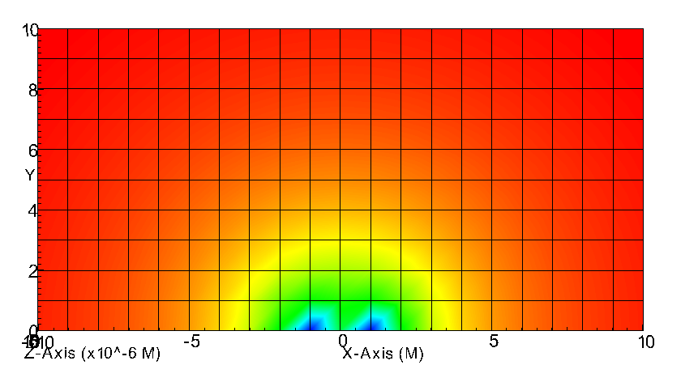

CactusNumerical¶
Provides numerical infrastructure thorns for time integration, artificial dissipation, symmetry boundary conditions, setting up spherical surfaces, interpolation, Method of Lines (MoL) implementation.
ReflectionSymmetry¶
Provide reflection symmetries, i.e., bitant, quadrant, and octant mode.
Parameter¶
Reflection symmetry at the lower z boundary
>>> CoordBase::xmin = -10.0 >>> CoordBase::ymin = -10.0 >>> CoordBase::zmin = 0.00 >>> CoordBase::xmax = +10.0 >>> CoordBase::ymax = +10.0 >>> CoordBase::zmax = +10.0 >>> CoordBase::dx = 1 >>> CoordBase::dy = 1 >>> CoordBase::dz = 1 >>> ReflectionSymmetry::reflection_z = "yes" >>> ReflectionSymmetry::avoid_origin_z = "no" >>> CoordBase::boundary_size_x_lower = 3 >>> CoordBase::boundary_size_y_lower = 3 >>> CoordBase::boundary_size_z_lower = 3 >>> CoordBase::boundary_size_x_upper = 3 >>> CoordBase::boundary_size_y_upper = 3 >>> CoordBase::boundary_size_z_upper = 3 >>> CoordBase::boundary_shiftout_x_lower = 1 >>> CoordBase::boundary_shiftout_y_lower = 1 >>> CoordBase::boundary_shiftout_z_lower = 1

Warning¶
The lower z face is a symmetry boundary. The symmetry condition and the corresponding CoordBase boundary must either be both staggered or both not staggered.
# TODO:
The lower z face is a symmetry boundary. If the symmetry condition is staggered, then the corresponding CoordBase shiftout must be 0; otherwise it must be 1.
>>> CoordBase::boundary_shiftout_z_lower = 1
MoL¶
The Method of Lines (MoL) converts a (system of) partial differential equation(s) into an ordinary differential equation containing some spatial differential operator. As an example, consider writing the hyperbolic system of PDE’s
in the alternative form
Given this separation of the time and space discretizations, well known stable ODE integrators such as Runge-Kutta can be used to do the time integration.
Parameter¶
chooses between the different methods.
>>> MoL::ODE_Method = "RK4"
controls the number of intermediate steps for the ODE solver. For the generic Runge-Kutta solvers it controls the order of accuracy of the method.
>>> MoL::MoL_Intermediate_Steps = 4
controls the amount of scratch space used.
>>> MoL::MoL_Num_Scratch_Levels = 1
Warning¶
When using the efficient RK4 evolver the number of intermediate steps must be 4, and the number of scratch levels at least 1.
>>> MoL::MoL_Intermediate_Steps = 4 >>> MoL::MoL_Num_Scratch_Levels = 1
Dissipation¶
Add fourth order Kreiss-Oliger dissipation to the right hand side of evolution equations.
The additional dissipation terms appear as follows
where \(h_{x}\), \(h_{y}\), and \(h_{z}\) are the local grid spacings in each Cartesian direction. \(\epsilon\) is a positive, adjustable parameter controlling the amount of dissipation added, and must be less that 1 for stability.
Parameter¶
Dissipation order and strength
>>> Dissipation::order = 5 >>> Dissipation::epsdis = 0.1
Note
Currently available values of order are \(p \in\{1,3,5,7,9\}\). To apply dissipation at order p requires that we have at least \((p + 1) / 2\) ghostzones respectively.
List of evolved grid functions that should have dissipation added
>>> Dissipation::vars = "ML_BSSN::ML_log_confac ML_BSSN::ML_metric ML_BSSN::ML_trace_curv ML_BSSN::ML_curv ML_BSSN::ML_Gamma ML_BSSN::ML_lapse ML_BSSN::ML_shift ML_BSSN::ML_dtlapse ML_BSSN::ML_dtshift"
SphericalSurface¶
SphericalSurface defines two-dimensional surfaces with spherical topology. The thorn itself only acts as a repository for other thorns to set and retrieve such surfaces, making it a pure infrastructure thorn.
Within the ET, uses of spherical surfaces include the following: storing apparent horizon information (used by AHFinderDirect); tracking black hole location (by thorn CarpetTracker), information which is then used to determine where to perform mesh refinement.
Parameter¶
Number of surfaces
>>> SphericalSurface::nsurfaces = 5
Surface Definition: Maximum number of grid points in the theta amd phi direction
>>> SphericalSurface::maxntheta = 39 >>> SphericalSurface::maxnphi = 76
Surface Definition. Some of spherical surface index may be used by PunctureTracker.
>>> SphericalSurface::name [0] = "Righthand NS" >>> SphericalSurface::ntheta [0] = 39 >>> SphericalSurface::nphi [0] = 76 >>> SphericalSurface::nghoststheta[0] = 2 >>> SphericalSurface::nghostsphi [0] = 2
Place surface at a certain radius
>>> SphericalSurface::set_spherical[0] = yes >>> SphericalSurface::radius [0] = 250
SpaceMask¶
The mask is a grid function which can be used to assign a state to each point on the grid. It is used as a bit field, with different bits, or combinations of bits, assigned to represent various states.
For instance, a programmer wants to record whether each point of the grid has state “interior”, “excised” or “boundary”. 2-bits of the mask (enough to represent the three possible states of the type) are allocated to hold this information. If a new type is required, bits are allocated to it from the remaining free bits in the mask.
Parameter¶
Turn on storage for mask
>>> SpaceMask::use_mask = "yes"
Slab¶
A slab is a sub-array of another array. The Slab thorn provides a routine to copy a slab from one array into a slab of another array. This can be used to change the processor distribution of some data, or to apply symmetry or periodicity boundary conditions, or to collect data onto a single processor to process it more easily.